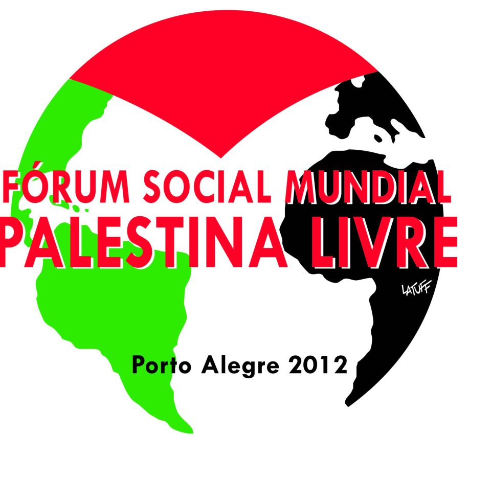

Lelex enviou na lista #metarec um convite-compartilhamento sobre o Fórum Social Mundial Palestina Livre, que acontecerá em Porto Alegre, entre os dias 28 de novembro e 1 de dezembro.
Conto com a solidariedade e apoio de vocês.

No próximo dia 28 de agosto, o Grupo de Trabalho de Comunicação iniciará uma grande mobilização (via redes sociais) com objetivo chamar a atenção da sociedade/imprensa. A proposta é fazer ações midiáticas conjuntas todo dia 28 (agosto, setembro, outubro e na abertura, em novembro).
A data foi escolhida por coincidir com o julgamento sobre o assassinato de Rachel Corrie, a ativista que se colocou como escudo humano contra uma demolição e foi atropelada intencionalmente pelo tratorista. Portanto, a pressão pela condenação do assassino deve fazer parte da ação.
Os interessados em participar podem entrar em contato pelo email prensa@wsfpalestine.net.